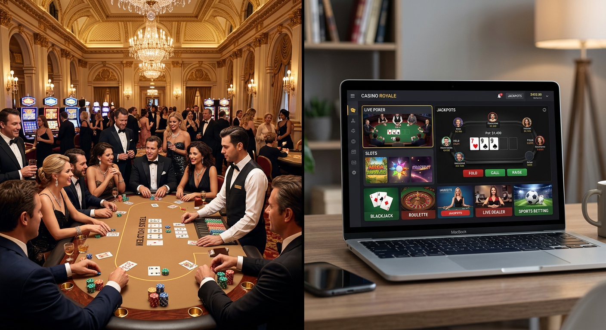
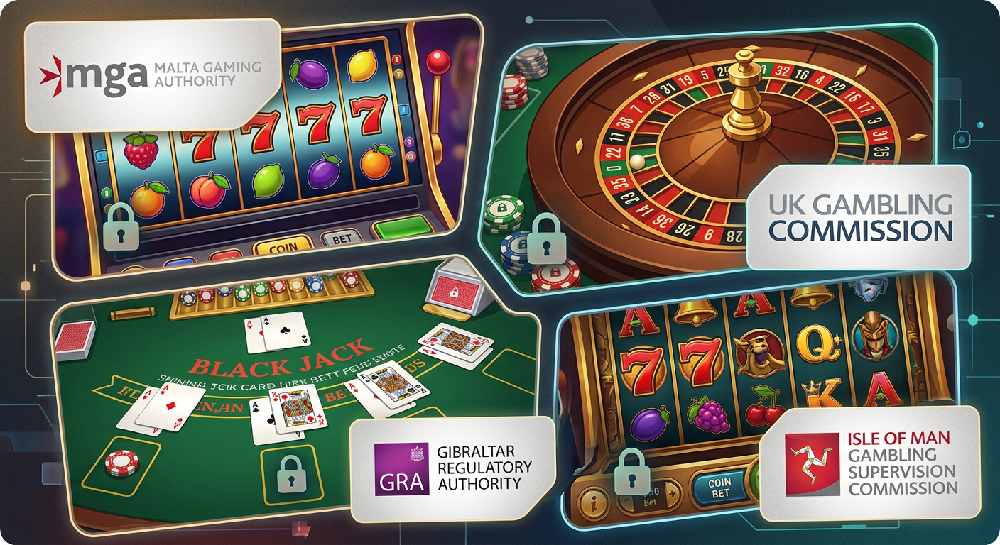
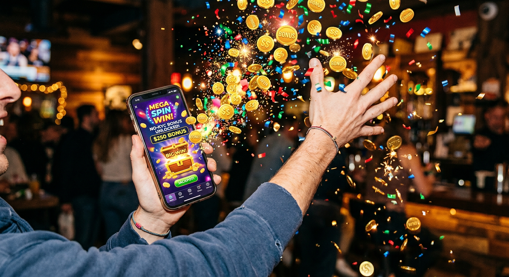
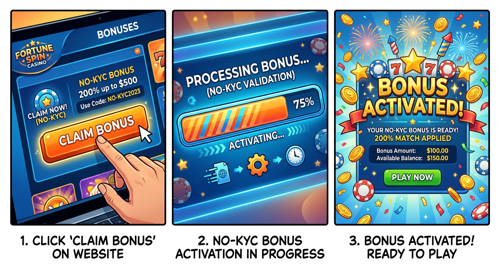
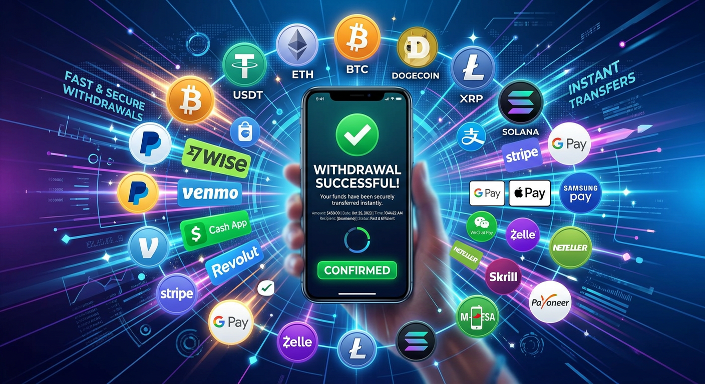

Bonus casino senza documento: Guida completa alle migliori offerte del 2026
Il panorama del gioco d'azzardo digitale in Italia ha subito una trasformazione radicale nel corso degli ultimi anni. Arrivati nel 2026, la priorità degli utenti è diventata la rapidità d'accesso unita alla massima tutela della privacy. In questo contesto, il concetto di bonus casino senza documento ha assunto un ruolo centrale, permettendo agli appassionati di testare le piattaforme e usufruire di promozioni vantaggiose senza dover attendere i lunghi tempi di verifica dell'identità tipici dei decenni passati.
Sempre più operatori internazionali, pur mantenendo standard di sicurezza elevatissimi, hanno compreso che l'ostacolo burocratico dell'invio dei documenti d'identità immediato può scoraggiare i nuovi iscritti. Per questo motivo, le piattaforme che offrono un casino senza documenti sono diventate le più ricercate nel mercato attuale. Questa guida esplora nel dettaglio come funzionano queste offerte, quali sono i rischi, i vantaggi e come orientarsi tra le moltissime opzioni disponibili oggi.
Nel 2026, la tecnologia blockchain e i nuovi sistemi di autenticazione digitale hanno reso obsoleto il vecchio metodo di invio tramite email di scansioni di carte d'identità. Oggi, il giocatore cerca immediatezza: l'obiettivo è registrarsi, ottenere i propri giri gratis o il credito omaggio e iniziare a divertirsi in pochi secondi. Vediamo insieme come identificare i siti più affidabili e come sfruttare al meglio ogni bonus casino senza documento disponibile sul mercato IT.
Cosa si intende per bonus casino senza documento?
Un bonus casino senza documento è una promozione offerta dalle piattaforme di gioco online che non richiede l'invio immediato di una copia della carta d'identità, della patente o del passaporto per essere attivata. In passato, per riscattare un bonus di benvenuto, era quasi sempre necessario attendere che lo staff del casinò verificasse manualmente i documenti caricati, un processo che poteva richiedere dalle 24 alle 48 ore. Nel 2026, questo paradigma è cambiato drasticamente.
Queste offerte possono presentarsi sotto diverse forme: crediti bonus gratuiti, ricariche aggiuntive sul primo deposito o i popolarissimi "free spin senza deposito immediato senza documenti". La caratteristica comune è la flessibilità. Il giocatore può iniziare a puntare sui propri titoli preferiti immediatamente dopo la creazione del profilo, posticipando la verifica dell'identità (il cosiddetto processo di KYC - Know Your Customer) al momento del primo prelievo delle vincite, o effettuandola tramite sistemi di verifica automatica istantanea.
È importante distinguere tra i bonus erogati dai casinò che operano sotto la giurisdizione italiana ADM (ex AAMS) e quelli che possiedono licenze internazionali come quella di Curaçao eGaming. Mentre i primi stanno iniziando a integrare sistemi come lo SPID per velocizzare la pratica, i secondi sono storicamente più snelli nel richiedere documentazione, offrendo spesso un'esperienza di gioco molto più fluida e immediata per chi cerca un bonus casino senza documento di qualità.
La differenza tra casinò tradizionali e piattaforme no-KYC

La principale distinzione nel 2026 risiede nella gestione dei dati personali. Un casinò tradizionale richiede una registrazione completa con codice fiscale e caricamento dei documenti entro 30 giorni per non vedere il proprio conto sospeso. Al contrario, le piattaforme che offrono un bonus casino senza documento operano spesso con un modello "no-KYC" o "KYC leggero". In queste sedi, l'iscrizione richiede solo un indirizzo email e la scelta di una password robusta.
Le piattaforme no-KYC sono spesso supportate dall'uso di criptovalute. Poiché il portafoglio crypto è già di per sé uno strumento verificato sulla blockchain, molti operatori considerano superfluo richiedere ulteriori documenti per le operazioni di deposito e per l'erogazione di un bonus casino senza documento. Questo garantisce un livello di anonimato che molti utenti italiani apprezzano, specialmente per evitare che i dati sensibili finiscano in database centralizzati vulnerabili ad attacchi informatici.
D'altro canto, i casinò con licenza ADM stanno cercando di colmare il divario implementando la verifica tramite IBAN o credenziali digitali governative. Tuttavia, se la vostra priorità è la velocità assoluta e la possibilità di giocare immediatamente a slot senza documenti, le piattaforme internazionali rimangono la scelta primaria nel 2026. Questi siti garantiscono comunque la sicurezza dei fondi grazie a protocolli di crittografia avanzati e audit regolari da parte di enti terzi indipendenti.
I migliori casino senza documenti con licenza e sicuri

Nel vasto mare delle offerte disponibili online, abbiamo selezionato alcuni dei brand più affidabili e generosi che operano nel 2026. Queste piattaforme sono state testate per la velocità di erogazione del bonus, la qualità del software e, naturalmente, la serietà dei pagamenti. Quando si cerca un bonus casino senza documento, l'affidabilità del brand è il primo fattore da considerare per evitare brutte sorprese in fase di incasso.
Tra i nomi di spicco troviamo Boomerang, un operatore che ha rivoluzionato il concetto di gamification. Qui, il bonus di benvenuto è strutturato per premiare l'utente sin dal primo secondo, senza barriere burocratiche. Un altro portale d'eccellenza è Wild Tokyo, noto per la sua estetica futuristica e per l'offerta di un bonus casino senza documento che include centinaia di giri gratuiti sulle slot più moderne dei fornitori leader come NetEnt e Pragmatic Play.
Non possiamo dimenticare LamaBet e Need for Spin. Queste piattaforme si sono distinte nel 2026 per la loro capacità di processare i pagamenti in meno di 10 minuti, rendendo l'esperienza di gioco dinamica e senza intoppi. Anche Fat Pirate e BetAlice offrono pacchetti di benvenuto estremamente competitivi, spesso associati alla funzione Bonus Crab, che permette di ottenere premi extra semplicemente partecipando a mini-giochi interattivi quotidiani.
Analisi dei bonus di benvenuto più generosi
Un bonus benvenuto senza documenti può variare notevolmente da un sito all'altro. In genere, nel 2026, la norma è un match bonus del 100% o 200% sul primo deposito fino a cifre considerevoli, come 500€ o 1000€. Ad esempio, Winnita offre un pacchetto che copre i primi tre depositi, permettendo ai nuovi giocatori di accumulare un bankroll significativo senza dover inviare subito la carta d'identità.
Oltre al credito extra, i migliori operatori includono spesso i free spin senza deposito immediato senza documenti. Questi giri gratuiti sono ideali per testare nuove slot senza rischiare il proprio capitale. È fondamentale, però, leggere attentamente i requisiti di scommessa (wagering). Un bonus generoso con un requisito di 40x potrebbe essere meno conveniente di un bonus leggermente più basso ma con un requisito di soli 20x. Piattaforme come Lanista tendono ad offrire condizioni molto equilibrate sotto questo punto di vista.
Infine, bisogna prestare attenzione alla scadenza del bonus. Nel 2026, la maggior parte dei casinò offre una finestra di 7-14 giorni per soddisfare i requisiti. Piattaforme come Boomerang sono particolarmente apprezzate perché offrono termini chiari e trasparenti, visualizzabili direttamente dalla propria area personale senza dover consultare pagine infinite di termini e condizioni scritte in piccolo.
Promozioni ricorrenti e programmi fedeltà
Oltre al bonus casino senza documento iniziale, la vera differenza la fanno le promozioni continuative. I migliori casinò del 2026 sanno che mantenere un cliente è importante quanto acquisirne uno nuovo. Per questo motivo, portali come Wild Tokyo propongono tornei settimanali con montepremi che superano i 50.000€, accessibili a tutti gli utenti registrati che hanno effettuato almeno un deposito.
I programmi fedeltà o VIP sono strutturati in livelli. Più si gioca, più si sale di rango, sbloccando vantaggi esclusivi come il cashback settimanale (che può arrivare fino al 25% delle perdite), limiti di prelievo più alti e un manager di conto dedicato. In molti casino online moderni, questi programmi sono automatizzati: non c'è bisogno di fare richiesta, i punti fedeltà vengono accumulati ogni volta che si effettua una puntata reale.
Un elemento distintivo del 2026 è l'integrazione del Bonus Crab. Si tratta di una macchina acchiappa-premi virtuale dove il giocatore può tentare la fortuna una volta al giorno. I premi spaziano dai giri gratis a bonus in denaro reale, fino a "monete" del negozio interno del casinò che possono essere scambiate con ulteriori bonus. È un modo divertente per ottenere un bonus slot senza invio documenti aggiuntivo ogni singola settimana.
Vantaggi di scegliere un bonus senza invio documenti

Il vantaggio principale è, senza ombra di dubbio, la velocità. Nel mondo frenetico del 2026, nessuno vuole perdere tempo a scansionare documenti, assicurarsi che le foto non siano sfocate e attendere l'approvazione manuale. Scegliere un bonus casino senza documento significa poter passare dall'iscrizione alla prima puntata in meno di sessanta secondi. Questo è particolarmente utile quando si vuole approfittare di una promozione a tempo limitato o di un evento sportivo live imminente.
Un altro beneficio fondamentale riguarda la sicurezza dei dati. Ogni volta che inviate una copia del vostro documento a un servizio online, create un potenziale punto di vulnerabilità. Sebbene i casinò certificati utilizzino protocolli di sicurezza avanzati, evitare del tutto l'invio riduce a zero il rischio che la vostra identità venga rubata in caso di data breach del server del casinò. La privacy è un diritto che i giocatori del 2026 rivendicano con forza, e il bonus casino senza documento ne è la massima espressione.
Infine, queste piattaforme offrono spesso una libertà d'azione maggiore. Molti metodi di pagamento moderni, come le criptovalute e i portafogli elettronici anonimi, si sposano perfettamente con l'assenza di KYC obbligatorio immediato. Questo permette ai giocatori di gestire il proprio budget in modo più discreto e di avere un controllo totale sui propri flussi finanziari legati al divertimento online.
Accesso immediato ai giri gratis
I free spin senza deposito immediato senza documenti non aams rappresentano il "Sacro Graal" per molti cacciatori di bonus. Poter girare i rulli di una slot machine moderna senza aver depositato un solo centesimo e senza aver fornito i propri dati sensibili è un'opportunità che solo pochi anni fa sembrava impossibile. Nel 2026, grazie alla concorrenza spietata tra i brand, questa è diventata una realtà consolidata.
L'accesso immediato ai giri gratis permette di valutare la fluidità del software di gioco sul proprio dispositivo mobile o desktop. Se il casinò non è all'altezza delle aspettative, l'utente può semplicemente chiudere la scheda del browser e passare al sito successivo, senza aver lasciato tracce digitali importanti o documenti d'identità. Questa modalità "test-drive" è essenziale per trovare la piattaforma perfetta per le proprie esigenze di gioco nel lungo periodo.
Molti di questi pacchetti di giri gratis sono legati a slot senza documenti specifiche, spesso le ultime novità lanciate dai provider. Questo è un ottimo modo per scoprire nuovi temi, meccaniche di gioco innovative (come i rulli a cascata o le funzioni bonus multilivello) e potenziali vincite elevate senza alcun investimento iniziale. È importante, tuttavia, verificare sempre il "max cashout", ovvero la cifra massima prelevabile derivante dalle vincite con questi giri omaggio.
Maggiore tutela della privacy personale
La protezione dei dati personali è diventata una priorità globale nel 2026. Molte persone preferiscono non far apparire transazioni legate al gioco d'azzardo sui propri estratti conto bancari tradizionali per motivi di privacy o per non influenzare futuri rating creditizi. Utilizzando un bonus casino senza documento su piattaforme che accettano crypto o e-wallets, si mantiene una separazione netta tra le finanze personali e l'attività ludica.
Le piattaforme che non richiedono documenti nell'immediato spesso non memorizzano informazioni superflue sull'utente. Spesso basta un nickname e una mail crittografata (come ProtonMail) per operare. Questo approccio minimalista alla raccolta dati è perfettamente in linea con le moderne filosofie di "Privacy by Design", dove solo i dati strettamente necessari all'erogazione del servizio vengono trattati. In questo modo, l'utente si sente più protetto e libero di godersi l'esperienza di un casinò senza pensieri.
Bisogna comunque ricordare che la privacy non significa assenza di regole. Il gioco è vietato ai minori di 18 anni e i casinò seri dispongono di sistemi di intelligenza artificiale per monitorare comportamenti sospetti o legati alla ludopatia. Anche senza l'invio formale dei documenti, l'operatore può richiedere verifiche se riscontra anomalie, garantendo così un ambiente di gioco sicuro e responsabile per tutta la comunità degli utenti italiani.
Come attivare un bonus casino senza documento in 3 passaggi

Attivare queste offerte nel 2026 è un processo estremamente semplificato, studiato per eliminare ogni frizione tra l'utente e il divertimento. Nonostante ogni piattaforma possa avere piccole varianti, la procedura standard per riscattare un bonus casino senza documento può essere riassunta in tre step fondamentali che richiedono pochissimi minuti di orologio.
- Registrazione Rapida: Clicca sul pulsante di iscrizione e inserisci i dati minimi richiesti. Solitamente si tratta di un indirizzo email valido, la scelta di una valuta (Euro o Cripto) e una password. Alcuni siti permettono l'iscrizione immediata tramite account social o portafogli Web3.
- Selezione del Bonus: Durante la fase di registrazione o subito dopo il primo accesso, ti verrà chiesto di scegliere quale bonus di benvenuto attivare. Assicurati di selezionare l'opzione che non richiede la verifica immediata dei documenti. A volte potrebbe essere necessario inserire un codice promozionale specifico.
- Effettuazione del Deposito (se richiesto): Se il bonus non è "senza deposito", procedi alla ricarica del conto utilizzando uno dei metodi di pagamento veloci disponibili. Una volta confermata la transazione, il credito bonus e gli eventuali giri gratis verranno accreditati automaticamente sul tuo saldo, pronti per essere utilizzati su tutte le slot senza documenti presenti in catalogo.
Seguendo questi semplici passaggi, sarai pronto a iniziare giocare in un batter d'occhio. Ricorda sempre di verificare se il bonus richiede un'attivazione manuale nella sezione "Promozioni" del tuo profilo prima di iniziare a scommettere, per evitare di perdere l'offerta a causa di una svista tecnica.
Metodi di pagamento consigliati per prelievi veloci

Nel 2026, la velocità del prelievo è tanto importante quanto quella del deposito. Chi sceglie un bonus casino senza documento lo fa solitamente perché desidera un'esperienza fluida. I metodi di pagamento tradizionali come i bonifici bancari sono ormai considerati obsoleti a causa dei tempi di elaborazione lunghi. Per ottenere le vincite in tempi record, è necessario affidarsi a tecnologie più avanzate e decentralizzate.
Secondo le statistiche di settore pubblicate da fonti autorevoli come Wikipedia, l'uso di portafogli elettronici e monete digitali ha ridotto i tempi medi di attesa da giorni a minuti. Questo è fondamentale quando si gioca su casinò internazionali che non impongono il KYC istantaneo. La flessibilità finanziaria è parte integrante dell'attrattiva di queste piattaforme moderne.
Oltre alla velocità, bisogna considerare le commissioni. Molti dei migliori casino nel 2026 offrono transazioni gratuite, assorbendo i costi di rete per incentivare i giocatori. Utilizzare il metodo giusto non solo velocizza l'incasso del vostro bonus casino senza documento, ma massimizza anche il profitto netto derivante dalle giocate vincenti.
Criptovalute e portafogli elettronici
Le criptovalute sono le regine indiscusse del gioco d'azzardo online nel 2026. Bitcoin, Ethereum, Litecoin e le stablecoin come USDT permettono trasferimenti di valore istantanei e quasi totalmente anonimi. Molti casinò offrono bonus specifici per chi deposita in crypto, spesso molto più generosi rispetto ai bonus in valuta fiat. Questo perché le transazioni crypto riducono i costi operativi per l'operatore stesso.
I portafogli elettronici (e-wallets) come Revolut, MuchBetter e MiFinity rimangono alternative validissime. Questi strumenti offrono un ponte sicuro tra il vostro conto bancario tradizionale e il casino online, garantendo che i dati della vostra carta di credito non vengano mai condivisi direttamente con il sito di gioco. I prelievi verso questi portafogli sono solitamente istantanei non appena il casinò approva la richiesta.
L'integrazione con Apple Pay e Google Pay ha ulteriormente semplificato il processo. Nel 2026, basta un tocco con l'impronta digitale o il riconoscimento facciale per confermare un deposito e attivare il proprio bonus casino senza documento. La combinazione di sicurezza biometrica e velocità di esecuzione rende questi strumenti la scelta ideale per il giocatore moderno che non vuole compromessi.
Utilizzo di SPID e CIE per la verifica automatica
Per quanto riguarda i casinò che operano nel mercato regolamentato italiano, la vera rivoluzione del 2026 è stata l'adozione massiccia dello SPID (Sistema Pubblico di Identità Digitale) e della CIE (Carta d'Identità Elettronica). Questi strumenti permettono di effettuare una verifica dell'identità "senza documenti" in senso fisico: non c'è bisogno di inviare foto o scansioni, basta autorizzare l'accesso ai dati tramite l'app ufficiale.
Questo sistema permette di riscattare un bonus benvenuto senza documenti cartacei con la massima garanzia di legalità. L'operatore riceve in tempo reale la conferma dell'identità e della maggiore età dell'utente, sbloccando immediatamente tutte le funzionalità del conto, inclusi i prelievi. È la soluzione perfetta per chi desidera la protezione della licenza ADM senza rinunciare alla rapidità d'accesso tipica dei siti internazionali.
Sebbene non tutti i casinò abbiano ancora implementato questa tecnologia, nel 2026 è diventata uno standard per i grandi brand nazionali. Scegliere un casinò che supporta lo SPID significa unire il meglio dei due mondi: la velocità dei casinò senza documenti e la sicurezza istituzionale dello stato italiano. È un'opzione eccellente per chi ha ancora qualche riserva sulle piattaforme puramente offshore.
Sicurezza e legalità: a cosa prestare attenzione
Nonostante la comodità di un bonus casino senza documento, la sicurezza non deve mai essere messa in secondo piano. Nel 2026, il numero di truffe online è purtroppo aumentato proporzionalmente alla diffusione del gioco digitale. Prima di depositare denaro, è essenziale verificare che il sito possieda una licenza valida. Le più comuni e affidabili per i casinò internazionali sono quelle rilasciate da Curaçao eGaming o dalla Malta Gaming Authority (MGA).
Verificate sempre che il sito utilizzi il protocollo HTTPS e che sia presente il simbolo del lucchetto nella barra degli indirizzi. Inoltre, leggete le recensioni di altri utenti su forum specializzati e portali di comparazione. Un casinò serio avrà termini e condizioni chiari, un servizio clienti raggiungibile 24/7 tramite live chat e una politica trasparente sul gioco responsabile. La presenza di loghi di associazioni per la tutela del giocatore, come Gambling Therapy o GamCare, è un ulteriore segnale di affidabilità.
Ricordate che, anche in un casino senza documenti, l'operatore ha l'obbligo di prevenire il riciclaggio di denaro. Se effettuate transazioni sospette o di entità estremamente elevata, il casinò potrebbe richiedere una verifica dell'identità (KYC) in conformità con le leggi internazionali. Essere pronti a collaborare in questi rari casi è fondamentale per mantenere il proprio conto in buona salute e garantire la sicurezza dell'intero ecosistema di gioco.
Termini e condizioni: requisiti di scommessa spiegati
Ogni bonus casino senza documento è accompagnato da un regolamento che ne definisce l'utilizzo. Il concetto più importante da comprendere è il "requisito di scommessa" o wagering. Questo indica quante volte il valore del bonus deve essere scommesso prima che le vincite diventino prelevabili sotto forma di denaro reale. Ad esempio, un bonus di 10€ con un wagering di 30x richiede un volume di gioco totale di 300€.
Oltre al wagering, bisogna fare attenzione alla "contribuzione dei giochi". Non tutti i titoli contribuiscono allo stesso modo al raggiungimento del requisito. Solitamente, le slot senza documenti contribuiscono al 100%, mentre i giochi da tavolo come il blackjack o la roulette potrebbero contribuire solo al 10% o essere del tutto esclusi. Se il vostro obiettivo è riscattare velocemente il bonus, concentratevi sulle slot con un alto tasso di ritorno al giocatore (RTP).
Altri dettagli cruciali includono il limite massimo di puntata per singolo giro (spesso fissato a 5€ mentre il bonus è attivo) e i limiti di tempo. Se non completate i requisiti entro il termine stabilito, il bonus e le vincite da esso derivate verranno annullati. Leggere attentamente queste clausole vi permetterà di sfruttare ogni bonus casino senza documento con consapevolezza, evitando frustrazioni al momento di incassare i vostri meritati profitti.
Domande frequenti sui casino senza documenti
Di seguito abbiamo raccolto le domande più comuni poste dai giocatori italiani nel 2026 riguardo al mondo dei bonus senza invio immediato dei documenti. Queste risposte vi aiuteranno a chiarire ogni dubbio residuo e a procedere con la vostra esperienza di gioco in totale serenità.
È legale giocare in un casino senza documenti in Italia?
Nel 2026, la legislazione europea permette ai cittadini di accedere a servizi di intrattenimento online internazionali. Sebbene i casinò ADM siano gli unici legalmente autorizzati a operare con sede in Italia, giocare su piattaforme con licenza Curaçao eGaming non è un reato per l'utente, purché si tratti di siti sicuri e regolamentati a livello internazionale. Molti giocatori italiani scelgono queste opzioni per la maggiore privacy e i bonus più alti.
Posso davvero prelevare senza aver inviato la carta d'identità?
Sì, in molti casinò "no-KYC" o specializzati in criptovalute, è possibile prelevare vincite di modesta o media entità senza passare per la verifica documentale. Tuttavia, per prelievi molto consistenti o se vengono rilevati comportamenti anomali, il casinò potrebbe richiedere una verifica una tantum per conformità alle normative anti-riciclaggio. L'utilizzo di sistemi come lo SPID nei casinò abilitati risolve questo problema all'istante.
Cosa sono i free spin senza deposito immediato senza documenti?
Si tratta di giri gratuiti che vengono accreditati sul conto gioco non appena completata la registrazione rapida. Sono chiamati "senza documenti" perché non richiedono il caricamento di file per essere riscattati e "immediati" perché appaiono istantaneamente. Rappresentano il modo migliore per provare un nuovo casino online nel 2026 senza alcun impegno economico o condivisione di dati sensibili.
Quali sono le migliori slot senza documenti su cui puntare?
Le slot senza documenti più popolari includono i grandi classici come Starburst e Gonzo's Quest, ma anche le nuove release Megaways e i giochi con funzione "Buy Bonus". Questi titoli sono disponibili in modalità demo o con saldo bonus sulla maggior parte dei siti internazionali affidabili come LamaBet e Wild Tokyo.
Tabella comparativa dei migliori Bonus Casino 2026
Per aiutarvi a scegliere la piattaforma più adatta alle vostre esigenze, abbiamo creato questa tabella di confronto che riassume le caratteristiche principali dei brand più caldi del momento. Tutte queste opzioni offrono un eccellente bonus casino senza documento per i nuovi iscritti.
| Brand | Bonus di Benvenuto | Giri Gratis | Caratteristica Unica |
|---|---|---|---|
| Boomerang | 100% fino a 500€ | 200 FS | Prelievi crypto ultra-rapidi |
| Wild Tokyo | Fino a 300€ + 150 FS | Inclusi | Design futuristico e Shop interno |
| Fat Pirate | 100% fino a 200€ | 50 FS | Funzione Bonus Crab quotidiana |
| LamaBet | Bonus Cashback 15% | No (solo Cashback) | Ideale per High Roller senza KYC |
| Need for Spin | 300% pacchetto totale | 300 FS | Tematica racing e velocità estrema |
Consigli per gestire il bankroll nel 2026
Ottenere un bonus casino senza documento è solo l'inizio. La chiave per un divertimento duraturo è una gestione intelligente del proprio budget di gioco. Non scommettere mai denaro che non puoi permetterti di perdere. Nel 2026, molti migliori casino integrano strumenti di auto-limitazione direttamente nell'interfaccia di gioco: usateli per impostare limiti di deposito giornalieri o settimanali.
Sfruttate i bonus per prolungare le vostre sessioni, ma non rincorrete le perdite. Se una sessione di gioco non sta andando bene, è meglio fermarsi e tornare un altro giorno. Ricordate che il gioco d'azzardo deve essere una forma di intrattenimento, non un modo per fare soldi. Piattaforme come BetAlice e Winnita offrono ampie sezioni dedicate al gioco responsabile per aiutare gli utenti a mantenere il controllo.
Infine, tenete traccia delle vostre giocate. Sapere quanto avete depositato e quanto avete prelevato nel corso del mese vi darà una visione chiara del vostro rapporto con il gioco. Con l'avvento dei portafogli digitali nel 2026, monitorare queste transazioni è diventato più facile che mai, permettendovi di godervi ogni bonus casino senza documento con la massima serenità e consapevolezza.
Il futuro del gioco online: cosa aspettarsi dopo il 2026
Guardando oltre il 2026, l'integrazione tra intelligenza artificiale e realtà virtuale renderà l'esperienza di un casinò ancora più immersiva. È probabile che la necessità di documenti fisici svanirà del tutto, sostituita da identità digitali biometriche e universali garantite dalla blockchain. Il bonus casino senza documento che conosciamo oggi si evolverà in premi personalizzati erogati in tempo reale in base alle preferenze del giocatore, analizzate dall'AI in modo etico e sicuro.
La trasparenza sarà garantita da contratti intelligenti (smart contracts) che pagheranno automaticamente le vincite agli utenti non appena la condizione di vittoria si verifica sui rulli, eliminando ogni intervento umano e ogni possibile ritardo. In questo scenario, la fiducia tra giocatore e operatore raggiungerà nuovi massimi storici, consolidando il settore del gioco digitale come uno dei pilastri dell'intrattenimento tecnologico globale.
Per ora, godiamoci le fantastiche opportunità offerte dalle piattaforme attuali. Che si tratti di Boomerang, LamaBet o Fat Pirate, il mercato del 2026 è ricco di opzioni sicure e generose. Scegliete il vostro bonus casino senza documento preferito, seguite i nostri consigli e ricordate sempre di giocare responsabilmente per un'esperienza di gioco impeccabile.

Content strategist e copywriter con esperienza decennale nel marketing digitale.